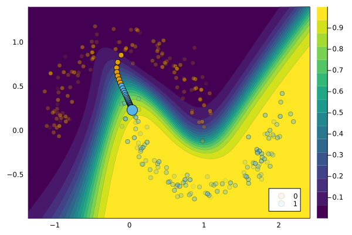

NeuroTreeModels.jl
NeuroTreeModels.jl is a package that provides a framework for training differentiable tree-based models. This is relevant to the work on counterfactual explanations (CE), which often assumes that the underlying black-box model is differentiable with respect to its input. The literature on CE therefore regularly focuses exclusively on explaining deep learning models. This is at odds with the fact that the literature also typically focuses on tabular data, which is often best modeled by tree-based models (Grinsztajn, Oyallon, and Varoquaux 2022). The extension for NeuroTreeModels.jl provides a way to bridge this gap by allowing users to apply existing gradient-based CE methods to differentiable tree-based models.
Please note that this extension is still experimental. Neither the behaviour of differentiable tree-based models nor their interplay with counterfactual explanations is well understood at this point. If you encounter any issues, please report them to the package maintainers. Your feedback is highly appreciated.
Please also note that this extension is only tested on Julia 1.9 and higher, due to compatibility issues.
Example
The extension will be loaded automatically when loading the NeuroTreeModels package (assuming the CounterfactualExplanations package is also loaded).
using NeuroTreeModelsNext, we will fit a NeuroTree model to the moons dataset using our standard package API for doing so.
# Fit model to data:
data = CounterfactualData(load_moons()...)
M = fit_model(
data, :NeuroTree;
depth=2, lr=5e-2, nrounds=50, batchsize=10
)NeuroTreeExt.NeuroTreeModel(NeuroTreeRegressor(loss = mlogloss, …), :classification_multi, NeuroTreeModels.NeuroTreeModel{NeuroTreeModels.MLogLoss, Chain{Tuple{BatchNorm{typeof(identity), Vector{Float32}, Float32, Vector{Float32}}, NeuroTreeModels.StackTree}}}(NeuroTreeModels.MLogLoss, Chain(BatchNorm(2, active=false), NeuroTreeModels.StackTree(NeuroTree[NeuroTree{Matrix{Float32}, Vector{Float32}, Array{Float32, 3}}(Float32[1.8824593 -0.28222033; -2.680499 0.67347014; … ; -1.0722864 1.3651229; -2.0926774 1.63557], Float32[-3.4070241, 4.545113, 1.0882677, -0.3497498, -2.766766, 1.9072449, -0.9736261, 3.9750721, 1.726214, 3.7279263 … -0.0664266, -0.4214582, -2.3816268, -3.1371245, 0.76548636, 2.636373, 2.4558601, 0.893434, -1.9484522, 4.793434], Float32[3.44271 -6.334693 -0.6308845 3.385659; -3.4316056 6.297003 0.7254221 -3.3283486;;; -3.7011054 -0.17596768 0.15429471 2.270125; 3.4926674 0.026218029 -0.19753197 -2.2337704;;; 1.1795454 -4.315231 0.28486454 1.9995956; -0.9651108 4.0999455 -0.05312265 -1.8039354;;; … ;;; 2.5076811 -0.46358463 -3.5438805 0.0686823; -2.592356 0.47884527 3.781507 -0.022692114;;; -0.59115165 -3.234046 0.09896194 2.375202; 0.5592871 3.3082843 -0.014032216 -2.1876256;;; 2.039389 -0.10134532 2.6637273 -4.999703; -2.0289893 0.3368772 -2.5739825 5.069934], tanh)])), Dict{Symbol, Any}(:feature_names => [:x1, :x2], :nrounds => 50, :device => :cpu)))Finally, we select a factual instance and generate a counterfactual explanation for it using the generic gradient-based CE method.
# Select a factual instance:
target = 1
factual = 0
chosen = rand(findall(predict_label(M, data) .== factual))
x = select_factual(data, chosen)
# Generate counterfactual explanation:
η = 0.01
generator = GenericGenerator(; opt=Descent(η), λ=0.01)
conv = CounterfactualExplanations.Convergence.DecisionThresholdConvergence(;
decision_threshold=0.9, max_iter=100
)
ce = generate_counterfactual(x, target, data, M, generator; convergence=conv)
plot(ce, alpha=0.1)
References
Grinsztajn, Léo, Edouard Oyallon, and Gaël Varoquaux. 2022. “Why Do Tree-Based Models Still Outperform Deep Learning on Tabular Data?” https://arxiv.org/abs/2207.08815.